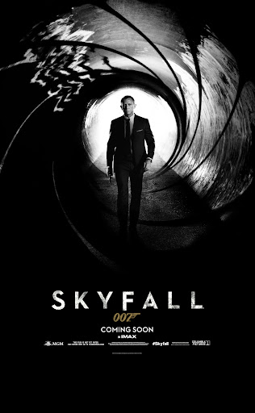

Skyfall (2012)

Diretor: Sam Mendes
Atores Principais: Daniel Craig, Javier Bardem, Judi Dench, Ralph Fiennes e Naomie Harris
Gênero: Ação / Espionagem / Suspense
Censura: 14 anos
Duração: 143 minutos (2h 23min)
Sinopse
Após uma missão fracassada em Istambul, o agente James Bond é dado como morto, e a identidade de vários agentes infiltrados ao redor do mundo é vazada na internet. Quando o próprio quartel-general do MI6 é atacado por um inimigo misterioso do passado de M, Bond reaparece para protegê-la e neutralizar a ameaça, mesmo que precise confrontar os segredos sombrios de sua própria infância em sua antiga propriedade familiar, Skyfall.
← Voltar ao catálogo